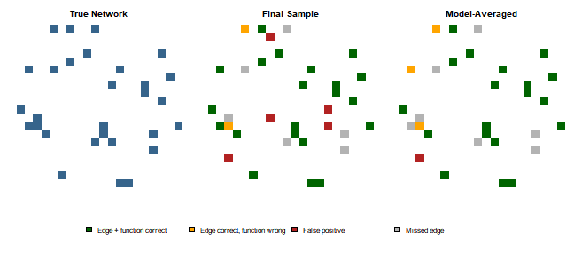

Overview
The BBNI (Bayesian Boolean Network Inference) package
implements a Bayesian approach for inferring both the network topology
(root and non-root nodes) and the corresponding Boolean logic transition
functions of each non-root node, using time-series gene expression
data.
As explained in Han et al. (2014), real-world biological systems
often exhibit noise and uncertainty. BBNI uses a
Metropolis-within-Gibbs Markov chain Monte Carlo (MCMC) algorithm to
sample from the joint posterior distribution of valid Directed Acyclic
Graph (DAG) topologies and their corresponding Boolean logic functions,
with explicit consideration of biological noise.
This vignette goes through the full workflow on a simulated example: generate a known “true” network, simulate noisy expression data from it, run the MCMC sampler, and check how well the sampler recovers the original network.
Setup and Data Simulation
First, load the package:
To evaluate the MCMC sampler, we will use the package’s built-in simulation functions to generate a artificial true network topology and simulate its corresponding noisy time-series data. This acts as a baseline to quantify the algorithm’s success in recovery the original network.
set.seed(303)
num_nodes <- 20
sample_size <- 90
# 1. Generate true DAG topology (T) and associated Boolean transition functions (F)
true_network <- GenerateNetwork(num.node = num_nodes)
# 2. Define Beta prior hyperparameters for root-node activation probabilities and the global noise parameter.
# Root nodes are initialized as Beta(3, 3) to set the prior expectation at 0.5
# while permitting localized node variation.
# The final row is specifies hyperparameters for the global noise parameter, fulfilling beta1 < beta2.
prior_para <- matrix(3, nrow = num_nodes + 1, ncol = 2)
prior_para[num_nodes + 1, 1] <- 2
prior_para[num_nodes + 1, 2] <- 100
# Sample independent root-node probabilities from their respective Beta priors
para <- numeric(num_nodes + 1)
for (i in 1:(num_nodes + 1)) {
para[i] <- rbeta(1, prior_para[i, 1], prior_para[i, 2])
}
# but fix the noise rate explicitly at 25%, bypassing the raw
# Beta(2, 100) draw to create a clear baseline for validation
para[num_nodes + 1] <- 0.25
# 3. Generate the noise matrix and simulate the observational dataset (G)
error_matrix <- matrix(rbinom(num_nodes * sample_size, 1, para[num_nodes + 1]),
nrow = num_nodes, ncol = sample_size
)
dummy_data <- GenerateSample(
trans_matrix = true_network,
num.node = num_nodes,
SampleSize = sample_size,
para = para,
error = error_matrix
)true_network is a num_nodes x
num_nodes matrix encoding both the DAG network’s topology
and its corresponding Boolean logic transition functions:
- An entry of
0at position[i, j]means nodejis not a parent of nodei. - A non-zero entry at
[i, j](an integer from 1 to 12) means nodejis a parent of nodei, and the value identifies which of the 12 potential Boolean transition functions is assigned to that parental input.
dummy_data is the simulated observational data
():
a num_nodes x sample_size binary matrix, where
each row is a genetic variable (node) and each column is a simulated
time point. This matrix is generated by executing
true_network’s logic forward, starting from
root_probs and subsequently corrupted with the simulated
noise matrix (error_matrix).
For applying BBNI to user-provided empirical expression
data rather than simulated data, GeneData must conform to
this exact geometry: an nxm matrix where rows
represent distinct nodes (e.g. genes), columns represent discrete
time-series iterations, and elements constrained to binary (0/1)
expression states.
Running the MCMC Sampler
Now we apply the run_bbni() algorithm to our synthetic
data to evaluate its inferential ability. We must specify a few
hyperparameters, including the Beta priors
()
for the root node probabilities and the global noise parameter
:
-
num_update- total number of MCMC iterations to run. -
penalty- hyperparameter tuning the structural prior, penalizing graph density/complexity -
prop.ratio- the mixing weight defining the mixture proposal distribution; it defines the probability of selecting an empirical proposal over a uniform random move. -
prior_para- a hyperparameter matrix, with rows 1 throughnspecifying the conjugate Beta() parameters for individual root-node Bernoulli success probabilities, while rown+1defines the prior bounds for the global noise parameter (strictly requiring the inequality constraint of ).
# Define hyperparameters config
num_update <- 4000 # Total MCMC iterations
penalty <- 0.1 # Structural prior penalty for network complexity
prop_ratio <- 0.1 # Initial proposal mixture coefficient
run_start <- Sys.time()
mcmc_results <- run_bbni(
GeneData = dummy_data,
num.node = num_nodes,
SampleSize = sample_size,
prior_para = prior_para,
num_update = num_update,
penalty = penalty,
prop.ratio = prop_ratio
)
run_end <- Sys.time()run_bbni() prints a diagnostic log for every individual
node state update (yielding num.node
num_update lines in total). While this verbose is useful
for interactive execution, it introduces too much bloat for a static
vignette. Therefore, the chunk’s raw output is suppressed above with
results='hide'. Instead, the crucial execution results are
summarized below:
cat(
"Sampler completed", num_update, "iterations (",
num_nodes * num_update, "node updates) in",
round(as.numeric(difftime(run_end, run_start, units = "mins")), 2), "minutes\n"
)
#> Sampler completed 4000 iterations ( 80000 node updates) in 33.72 minutesAnalyzing the Output
run_bbni() returns a list containing the full
realization trajectory of the Markov chain:
-
log_posterior- a numeric vector containing the log-posterior value recorded after every individual node update -
networks- a list of the sampled transition function matrices across the execution. Each element is in the same format astrue_networkabove.
Convergence: Trace Plot
A trace plot of the log-posterior value over the execution timeline
is the primary diagnostic tool to evaluate whether a chain is behaving
rationally. As a baseline, we can also compute the log-posterior of the
true network itself (using the package’s internal
Error_LLH() function) and overlay it as a reference line.
This tells us how close the chain’s execution gets to true network:
# Evaluate the log-posterior value of the true network
# Calls an unexported pakage function to compute the exact target value baseline given the data
true_logpost_raw <- BBNI:::Error_LLH(
TRFUM = true_network, GeneData = dummy_data,
SampleSize = sample_size, num.node = num_nodes,
prior_para = prior_para, penalty = penalty
)
# log_post_model is always the LAST element of the first result vector
true_logpost <- true_logpost_raw[[1]][length(true_logpost_raw[[1]])]
# Generate the Markov chain trace plot to visualize convergence
# Plots the log-posterior value against individual node updates
plot(mcmc_results$log_posterior,
type = "l",
xlab = "MCMC Step (one per node update)", ylab = "Log-Posterior",
main = "MCMC Trace Plot",
ylim = range(c(mcmc_results$log_posterior, true_logpost))
)
# Graph the theoretical truth baseline to visualize network recovery
abline(h = true_logpost, col = "firebrick", lty = 2, lwd = 2)
legend("bottomright",
legend = "True network log-posterior",
col = "firebrick", lty = 2, lwd = 2, bty = "n"
)
The horizontal axis here is in units of individual node updates, not outer iterations. Convergence of the Markov chain doesn’t require that the trajectory cross the reference line; rather, asymptotic proximity to it is sufficient. A perfect structural or functional match with the true network is not expected due to uncertainty as an individual sample from the joint posterior distribution.
The Final Sampled Network
We can extract and view the network sampled at the final iteration of the Markov chain:
final_network <- tail(mcmc_results$networks, 1)[[1]]
final_network
#> [,1] [,2] [,3] [,4] [,5] [,6] [,7] [,8] [,9] [,10] [,11] [,12] [,13] [,14] [,15] [,16] [,17] [,18]
#> [1,] 0 0 0 0 0 0 0 0 0 11 0 0 0 0 0 0 0 0
#> [2,] 0 0 0 0 0 0 0 6 0 0 0 0 0 0 6 0 0 0
#> [3,] 0 0 0 7 0 0 0 7 0 0 0 0 0 0 0 0 0 0
#> [4,] 0 0 0 0 0 0 12 0 0 0 0 0 0 0 0 0 0 0
#> [5,] 0 0 0 0 0 0 0 0 0 0 0 0 0 0 0 0 0 0
#> [6,] 0 12 0 0 0 0 0 0 0 0 0 0 0 0 0 0 0 0
#> [7,] 0 0 0 0 0 0 0 0 0 0 0 0 0 0 0 3 0 0
#> [8,] 0 0 0 0 0 0 0 0 4 0 0 0 0 0 0 0 0 0
#> [9,] 0 0 0 0 0 0 0 0 0 0 0 0 0 0 0 0 12 0
#> [10,] 0 0 0 0 0 0 0 0 0 0 0 0 0 0 0 0 0 0
#> [11,] 0 0 0 0 0 0 3 3 0 0 0 0 0 0 0 0 0 0
#> [12,] 0 0 0 0 0 4 0 0 0 0 0 0 4 0 0 0 0 0
#> [13,] 5 0 0 0 0 0 0 0 0 0 0 0 0 0 5 0 0 0
#> [14,] 12 0 0 0 0 0 0 0 0 0 0 0 0 0 0 0 0 0
#> [15,] 0 0 0 0 0 0 0 1 0 1 0 0 0 0 0 0 0 0
#> [16,] 0 0 0 0 0 0 0 0 0 0 0 2 2 0 0 0 0 0
#> [17,] 0 0 0 0 0 0 0 0 0 0 0 0 0 0 0 0 0 0
#> [18,] 0 0 0 0 0 0 0 0 0 0 2 0 0 0 0 0 2 0
#> [19,] 0 0 0 0 0 0 0 0 0 0 0 0 0 12 0 0 0 0
#> [20,] 0 0 0 0 0 0 0 11 0 0 0 0 0 0 0 0 0 0
#> [,19] [,20]
#> [1,] 0 0
#> [2,] 0 0
#> [3,] 0 0
#> [4,] 0 0
#> [5,] 0 12
#> [6,] 0 0
#> [7,] 0 3
#> [8,] 4 0
#> [9,] 0 0
#> [10,] 0 0
#> [11,] 0 0
#> [12,] 0 0
#> [13,] 0 0
#> [14,] 0 0
#> [15,] 0 0
#> [16,] 0 0
#> [17,] 0 0
#> [18,] 0 0
#> [19,] 0 0
#> [20,] 0 0Did the Sampler Recover the True Network?
Given a clear true network baseline, we can directly quantify the accuracy of the terminal state realization by evaluating how well it recovered edge structure and Boolean function logic:
true_edges <- true_network > 0
final_edges <- final_network > 0
true_positive <- sum(true_edges & final_edges) # correctly recovered edges
false_positive <- sum(!true_edges & final_edges) # spurious edges
false_negative <- sum(true_edges & !final_edges) # missed true edges
cat("True edges in the network: ", sum(true_edges), "\n")
#> True edges in the network: 29
cat("Correctly recovered edges: ", true_positive, "\n")
#> Correctly recovered edges: 23
cat("Spurious (false positive) edges: ", false_positive, "\n")
#> Spurious (false positive) edges: 5
cat("Missed (false negative) edges: ", false_negative, "\n")
#> Missed (false negative) edges: 6
# Among the correctly-recovered edges, how many also got the right
# Boolean function?
correct_function_final <- sum(true_edges & final_edges & (true_network == final_network))
cat("...of which function also correct: ", correct_function_final, "out of", true_positive, "\n")
#> ...of which function also correct: 21 out of 23Some mismatch here is expected. This comparison only uses a single sample from the end of the Markov chain, not a proper posterior summary. The next section will address that.
A Better Estimate: Bayesian Model Averaging
Rather than relying a single sample prone to noise and picking up spurious edges, we can approximate the posterior properly via Bayesian Model Averaging (BMA) over the sampled network space. In a wet-lab setting, false positive edges may lead to wasted efforts to validate data, while BMA naturally regulates against this. Although it may drop a weak true edge, it effectively filters out false positive noise to reduce to overall toplogical error.
To do this, we first discard an initial burn-in period (75% of chain)
to eliminate transient bias from the arbitrary initial structure. Then,
we strip the chain down to just one network per outer iteration (every
num.node steps). This is to avoid dependent samples from
samples in the same iteration being highly correlated. Using this pruned
combination of independent samples, we can compute each directed edge’s
posterior inclusion probability as the fraction of samples where it’s
present:
# Burn-in set at 75%, from empirical visual observation of the trace plot (see above)
burnin_cutoff <- round(0.75 * length(mcmc_results$log_posterior))
# Prune to one sample per full outer iteration
keep_idx <- seq(burnin_cutoff + 1, length(mcmc_results$log_posterior), by = num_nodes)
cat("Post-burn-in, pruned samples retained:", length(keep_idx), "\n")
#> Post-burn-in, pruned samples retained: 1000
# Posterior edge-inclusion probability, averaged across retained samples
edge_prob <- Reduce(`+`, lapply(mcmc_results$networks[keep_idx], function(m) (m > 0) * 1)) / length(keep_idx)
bma_edges <- edge_prob > 0.5 # call an edge "present" if more likely than not
bma_tp <- sum(true_edges & bma_edges)
bma_fp <- sum(!true_edges & bma_edges)
bma_fn <- sum(true_edges & !bma_edges)
cat("Correctly recovered edges: ", bma_tp, "\n")
#> Correctly recovered edges: 22
cat("Spurious (false positive) edges: ", bma_fp, "\n")
#> Spurious (false positive) edges: 1
cat("Missed (false negative) edges: ", bma_fn, "\n")
#> Missed (false negative) edges: 7
# to evaluate Boolean function accuracy, take the posterior mode (most frequently sampled
# function code) for each matrix coordinate across the retained samples, then build a full
# consensus network toplogy
get_mode_nonzero <- function(v) {
nz <- v[v > 0]
if (length(nz) == 0) return(0)
tab <- table(nz)
as.numeric(names(tab)[which.max(tab)])
}
sample_array <- simplify2array(mcmc_results$networks[keep_idx])
bma_function <- apply(sample_array, c(1, 2), get_mode_nonzero)
bma_network <- matrix(0, nrow = num_nodes, ncol = num_nodes)
bma_network[bma_edges] <- bma_function[bma_edges]
correct_function_bma <- sum(true_edges & bma_edges & (true_network == bma_network))
cat("...of which Boolean function also correct: ", correct_function_bma, "out of", bma_tp, "\n")
#> ...of which Boolean function also correct: 19 out of 22
missed_edge_idx <- which(true_edges & !final_edges)
fp_edge_idx <- which(!true_edges & final_edges)
cat("Posterior probability of the missed true edge:", edge_prob[missed_edge_idx], "\n")
#> Posterior probability of the missed true edge: 0 0.083 0.016 0 0.308 0.081
cat("Posterior probability of the false-positive edge:", edge_prob[fp_edge_idx], "\n")
#> Posterior probability of the false-positive edge: 1 0.011 0.046 0.012 0.071Visualizing the Networks
A side-by-side view of the true network, the single final sampled network, and the Bayesian model-averaged result. A correctly-placed edge with the wrong Boolean function is made visually distinct from one that is fully correct:
# Classify every cell relative to the true network: correct absence,
# fully correct edge, edge present but wrong function, false positive,
# or missed (false negative)
classify_match <- function(true_net, sample_net) {
true_e <- true_net > 0
samp_e <- sample_net > 0
out <- matrix(0, nrow = nrow(true_net), ncol = ncol(true_net))
out[!true_e & !samp_e] <- 0 # correct absence
out[true_e & samp_e & (true_net == sample_net)] <- 1 # edge + function correct
out[true_e & samp_e & (true_net != sample_net)] <- 2 # edge correct, function wrong
out[!true_e & samp_e] <- 3 # false positive
out[true_e & !samp_e] <- 4 # missed (false negative)
out
}
final_match <- classify_match(true_network, final_network)
bma_match <- classify_match(true_network, bma_network)
match_cols <- c("white", "darkgreen", "orange", "firebrick", "gray70")
match_breaks <- c(-0.5, 0.5, 1.5, 2.5, 3.5, 4.5)
match_labels <- c("Edge + function correct", "Edge correct, function wrong",
"False positive", "Missed edge")
layout(matrix(c(1, 2, 3, 4, 4, 4), nrow = 2, byrow = TRUE), heights = c(4, 1))
par(mar = c(2, 2, 3, 1))
image(true_edges * 1, col = c("white", "steelblue4"), breaks = c(-0.5, 0.5, 1.5),
axes = FALSE, main = "True Network")
image(final_match, col = match_cols, breaks = match_breaks, axes = FALSE, main = "Final Sample")
image(bma_match, col = match_cols, breaks = match_breaks, axes = FALSE, main = "Model-Averaged")
par(mar = c(0, 0, 0, 0))
plot.new()
legend("center", legend = match_labels, fill = match_cols[2:5], horiz = TRUE, bty = "n")
Next Steps
This vignette covers the basic workflow on simulated data. From here:
- See
?run_bbni,?GenerateNetwork, and?GenerateSamplefor full parameter documentation. - This example already runs 4000 iterations on a 20-node network, enough to show clear convergence. Larger networks or higher accuracy will need proportionally more iterations.
- If you’re applying
BBNIto your own expression data, formatGeneDataas a binarynum.nodexSampleSizematrix, as described above.
Session Information
sessionInfo()
#> R version 4.6.0 (2026-04-24 ucrt)
#> Platform: x86_64-w64-mingw32/x64
#> Running under: Windows 11 x64 (build 28020)
#>
#> Matrix products: default
#> LAPACK version 3.12.1
#>
#> locale:
#> [1] LC_COLLATE=Spanish_Latin America.utf8 LC_CTYPE=C
#> [3] LC_MONETARY=Spanish_Latin America.utf8 LC_NUMERIC=C
#> [5] LC_TIME=Spanish_Latin America.utf8
#>
#> time zone: America/Chicago
#> tzcode source: internal
#>
#> attached base packages:
#> [1] stats graphics grDevices utils datasets methods base
#>
#> other attached packages:
#> [1] BBNI_0.0.0.9000
#>
#> loaded via a namespace (and not attached):
#> [1] compiler_4.6.0 fastmap_1.2.0 cli_3.6.6 htmltools_0.5.9 tools_4.6.0
#> [6] otel_0.2.0 rstudioapi_0.18.0 yaml_2.3.12 rmarkdown_2.31 knitr_1.51
#> [11] xfun_0.58 digest_0.6.39 bitops_1.0-9 rlang_1.2.0 evaluate_1.0.5